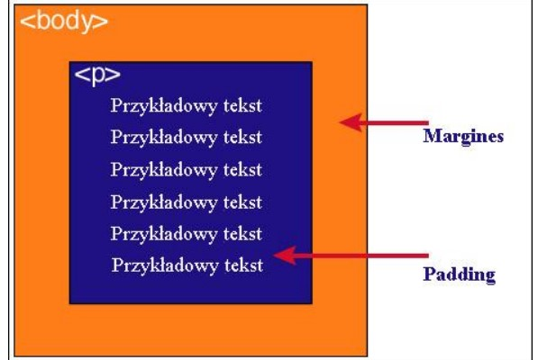

| content | zawartość elementu (np.: tekst, obrazek) |
| padding | otaczające marginesy wewnętrzne, odstęp między obramowaniem i zawartością elementu |
| border | obramowania wokół zawartości elementu, ma styl i kolor. |
| margin | marginesy wokół ramki (margines zewnętrzny). Jest to pusty obszar wokół ramki, który nie ma koloru tła i jest przeźroczysty. |
3.Podaj dwie uwagi na temat modelu pudełkowego.
Uwaga 1
Tło elementu jest określone dla wszystkich z podanych powyżej obszarów z wyjątkiem marginesów zewnętrznych, które zawsze są przezroczysteUwaga 2
Padding, border i margin mogą mieć zerową wartość4.Model pudełkowy

Różnica między paddingiem i marginesem
Padding określa przestrzeń wokół danego elementu, np: "p" lub"div", natomiast margines przestrzeń pomiędzy elementami.

padding oznaczony jest kolorem niebieskim. Określa on wielkość przestrzeni wokół elementu "p".